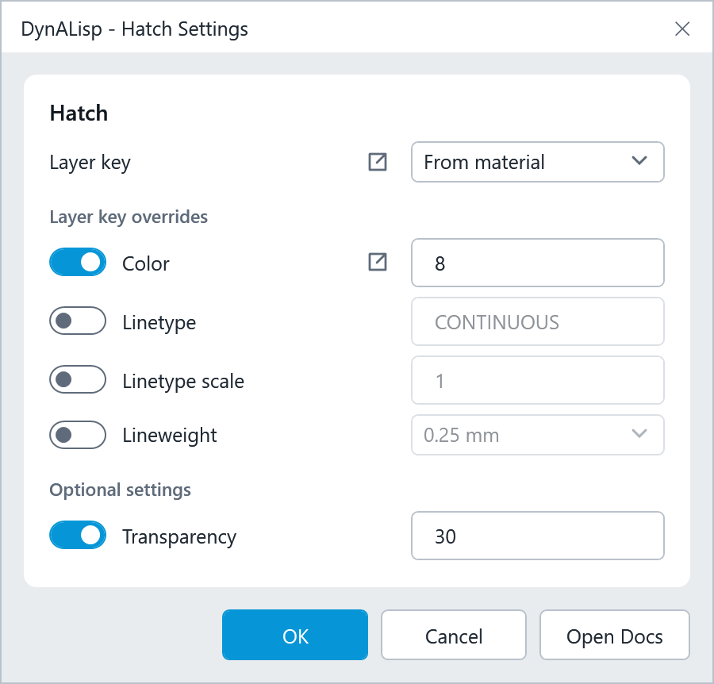

Hatch Settings
| Opened by | The open button of Has a hatch, in the Parameters box of the Quick Draw window, and in the Assembly Presets window for a layer of an assembly |
| Requires | AutoCAD for Windows (ActiveX / Visual LISP) |
| Licence | GNU General Public License v3 |
Program Description
Set the hatch of a Quick Draw preset: the layer key it goes on, that of its material or another one, and the properties the hatch overrides, its color, linetype, linetype scale and lineweight, and its transparency, in place of those of its material. The material itself is not changed: the other presets that use it keep its hatch. Whether the preset has a hatch at all is Has a hatch, in the Parameters box of the Quick Draw window: unchecked, only the outlines are drawn, as the border. An assembly has none of its own (Has a hatch is greyed out), its layers have theirs; Replace hatches gives its material as it is (greyed out too).
The same window sets the hatch of a Hatch layer of an assembly: opened from the Assembly Presets window, it edits the layers selected. There, the open buttons of the layer key and of the color are greyed out: pick the layer key in its list and type the color.
How To Use
- In the Quick Draw window, pick the presets and click the square open button beside Has a hatch in their Parameters box (checked by default): the Hatch Settings window opens on the hatch of the preset shown.
- Pick the layer key (From material keeps that of the material), check the properties to override and give their values, then OK. The text under Has a hatch sums up the hatch (From material, Color 8, Transparency 30).
- For a layer of an assembly, in the Assembly Presets window, select the Hatch layers and click the open button beside Has a hatch.
Hatch Settings Window

| Setting | Use |
|---|---|
| Layer key | The layer key of the hatch: the hatch goes on its layer. From material: the hatch layer key of its material (of the preset, or of the layer of an assembly). A key used but not defined is marked (not defined). The square open button beside it opens the Layer Keys window on that key, to create or edit keys (saved on its own OK); double-click a key there to use it. |
| Color | Optional. Color of the hatch: an AutoCAD color number (1-255) or a true color r,g,b. The square open button beside it opens the color window of AutoCAD. |
| Linetype | Optional. Linetype of the hatch, loaded from acad.lin or acadiso.lin when the drawing does not have it. |
| Linetype scale | Optional. Linetype scale of the hatch, greater than 0. |
| Lineweight | Optional. Lineweight of the hatch. |
| Transparency | Optional. Transparency of the hatch, 0 to 90. |
- Each optional setting has a checkbox: its value stays greyed out until it is checked. Unchecked, the hatch has the property its material gives it (its own override, or that of its layer).
- OK gives the hatch to every preset selected in the Quick Draw window (saved with them by Draw or Save), or to every Hatch layer selected in the Assembly Presets window, once the values are valid (a message under the boxes says what to fix). Cancel discards the changes, Open Docs opens this page.
- The open buttons close the window for a moment and open it again on what was picked.